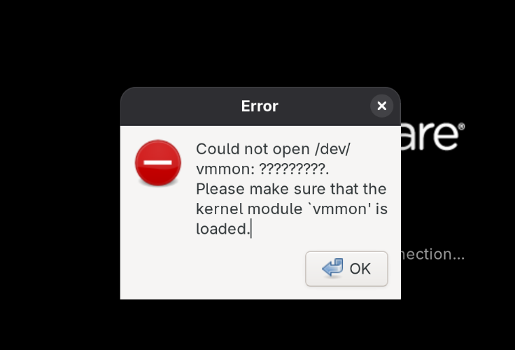

Problem Shooting¶
Upgrade¶
2025.10.28，Fedora发布最新版本43。
升级命令：sudo dnf system-upgrade download --releasever=43
dnf源问题¶
升级的时候遇到了一些源上的问题，即使开了梯子，连接Redhat官方源也有些困难。之前偶尔也会遇到源403的问题。
在AI指导下对源进行了多次调整：
当前的fedora.repo：
[fedora]
name=Fedora $releasever - $basearch
baseurl=https://mirrors.tuna.tsinghua.edu.cn/fedora/releases/$releasever/Everything/$basearch/os/
# baseurl=https://mirrors.fedoraproject.org/fedora/releases/$releasever/Everything/$basearch/os/
# metalink=https://mirrors.fedoraproject.org/metalink?repo=fedora-$releasever&arch=$basearch
enabled=1
countme=1
metadata_expire=7d
repo_gpgcheck=0
type=rpm
gpgcheck=1
gpgkey=file:///etc/pki/rpm-gpg/RPM-GPG-KEY-fedora-$releasever-$basearch
skip_if_unavailable=False
baseurl: 指定软件源的基本 URL 地址，若提供多个，则从上到下依次尝试直到找到能用的。metalink：提供一个元数据链接，允许包管理器自动选择最快的镜像源。baseurl和metalink冲突，如需使用国内镜像，只开启baseurl即可enabled：表示该仓库是否启用。通常，fedora-debuginfo(主要用于开发者调试程序时安装带有调试符号的包)和fedora-source(提供所有发行版软件包的源码，方便用户查看、修改或自行编译)默认是禁用的。
系统更新、但是内核未更新¶
我的系统已经升级到Fedora 43(cat /etc/fedora-release输出Fedora release 43 (Forty Three))，但是内核依然是6.17.4(42)。尝试使用如下命令设置默认内核：
# 查看所有已安装的内核
sudo grubby --info=ALL
# 设置 fc43 内核为默认
sudo grubby --set-default /boot/vmlinuz-6.17.5-300.fc43.x86_64
# 验证设置
sudo grubby --default-kernel
或者重新生成 GRUB 配置，但是这个方法第一次似乎并不成功：
# 更新 GRUB 配置
sudo grub2-mkconfig -o /boot/grub2/grub.cfg
# 对于 EFI 系统
sudo grub2-mkconfig -o /boot/efi/EFI/fedora/grub.cfg
重启后确实变成了6.17.5(43)内核，但是，又出现了Fedora早在安装时就出现的老毛病：亮度调节失效，并且我的Hyprland几乎也处于完全不可用状态。再次重启，在 GRUB 启动菜单选择了 Fedora 42 的内核后，又恢复正常了。
NVIDIA驱动更新¶
TODO1：持久化解决升级系统时带来的亮度失效一类的小问题？https://gemini.google.com/app/c9dbbb054e918c5f
VPN¶
本学期部分课程需要用到VPN访问校内资源，Fedora下使用MotionPro(下载链接，“适用于CentOS”的也支持Fedora)连接VPN。注意，可能是因为Clash开启了全局代理模式，即使改成直连模式，开启MotionPro后依然无法连接校内资源，必须彻底关闭Clash才能连接成功。启动命令：export QT_QPA_PLATFORM=xcb && MotionPro。
VMware Workstation¶
VMware作为商业闭源软件，在Fedora比较激进的更新策略下，几乎每次执行sudo dnf upgrade --refresh后都会出现问题，比如vmnet和vmmon安装不上。
可以通过下文提到的各种补丁包解决，或者，我最近新发现一个对VMware进行补丁支持的仓库，似乎还有对VMware的性能提升。
TODO2: Kali Linux虚拟机登录界面无限重复，开启/关闭3D加速均无效。搜索：vmware kali stuck on login。
Kernel 6.15.6¶
VMware Workstation 17.6.4对Linux 6.15.6内核支持稍有问题，安装后初次启动会报错找不到内核头文件：
解决方法：sudo dnf install kernel-devel-$(uname -r)
再次启动时依然报错，找不到driver-config.h文件。根据讨论指出的相关Issue，需要下载补丁包并编译安装。make, sudo make install。补丁包会安装vmmon和vmnet模块。
安装后可以正常进入VMWare，但是启动虚拟机时(运行时)报错：
原因是Secure Boot禁止了VMWare的内核模块启动。参考讨论即可。Reboot之后已经能自动找到创建的Key，输入密码之后直接重启即可。
Vmware初次配置好后，以后基本就能自动更新和编译模块了。
Kernel 6.16.4¶
这次遇到的报错是VM 17.6.4与内核6.16.4不兼容。
通用的解决方案是参考Patches Repo中的不同分支和Issue区的最新社区补丁。本次参考的补丁是2周前非常活跃的、有20个comments的Issue补丁：https://github.com/arizvisa/mkubecek.vmware-host-modules. 该补丁也有一点小问题，是VMMON的版本号不对，在vmnet-only/include/iocontrols.h中修改416为417即可。然后执行以下命令（也是通用的）：
cd vmware-host-modules
make # NOTE 我们只需要make的中间产物，sudo make install似乎也会出现问题
KERNEL_VERSION=$(uname -r)
sudo cp vmmon.o /lib/modules/$KERNEL_VERSION/misc/vmmon.ko
sudo cp vmnet.o /lib/modules/$KERNEL_VERSION/misc/vmnet.ko
sudo depmod -a # 更新模块依赖
sudo systemctl restart vmware.service
重新启动Vmware即可。
Kernel 6.16.10¶
使用补丁的workstation-17.6.4分支。步骤同上。
X11兼容¶
Wayland下有问题的应用：
- JFLAP
- MotionPro
export QT_QPA_PLATFORM=xcb && MotionPro可解决
- OBS Studio
JFLAP无法启动¶
最近形式语言与自动机，需要用JFLAP.jar，初次启动报错：
Exception in thread "main" java.awt.HeadlessException: No X11 DISPLAY variable was set, or no headful library support was found, but this program performed an operation which requires it,
解决方案：下载完整的OpenJDK，然后强制Java通过XWayland渲染。
# 搜索可用的OpenJDK版本
sudo dnf search openjdk
# 我选择安装java21
sudo dnf install java-21-openjdk java-21-openjdk-devel java-21-openjdk-headless
# 检查XWayland是否启动
ps aux | grep Xwayland
# java GUI依赖
sudo dnf install gtk3 libXext libXrender libXtst libXi libX11
# 带参运行JFLAP
env GDK_BACKEND=x11 \ # 强制 Java 通过 X11 渲染
_JAVA_AWT_WM_NONREPARENTING=1 \ # 适配非传统窗口管理器（如 Hyprland）
DISPLAY=:0 \ # 显式指定 XWayland 的显示接口
java -Dawt.useSystemAAFontSettings=on \
-Dswing.aatext=true \
-jar JFLAP7.1.jar
或者制作启动脚本：
#!/usr/bin/env bash
export GDK_BACKEND=x11
export DISPLAY=:0
export _JAVA_AWT_WM_NONREPARENTING=1
java -Dawt.useSystemAAFontSettings=on \
-Dswing.aatext=true \
-jar path/to/JFLAP7.1.jar
OBS Studio¶
无法播放mkv文件：无法初始化OPenGL支持¶
解决：
# 安装必要的编解码器
sudo dnf install ffmpeg-free mpv vlc
# 或者完整的 FFmpeg（从 RPM Fusion）
sudo dnf install ffmpeg
# 设置默认播放器
xdg-mime default mpv.desktop video/x-matroska
摄像头、窗口全部黑屏¶
首先，弄清楚obs是通过flathub还是系统命令启动的，我这里flathub似乎不支持--env传参方式。
- 使用环境变量启动，解决窗口黑屏：
- 摄像头：
我的pipewire摄像头无法使用，但是V2L2可以，不知道为什么。
Wemeet 无rpm包、安装后无法开启视频、共享屏幕等¶
安装问题¶
参考：https://zhuanlan.zhihu.com/p/661066952。使用alien将deb转为rpm后安装。
会议问题¶
TODO.暂未解决，OBS Studio虚拟摄像头方案：可以识别到，但是虚拟摄像头黑屏。